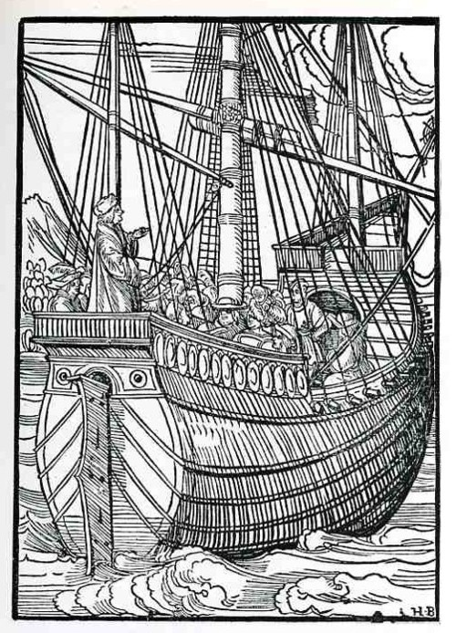
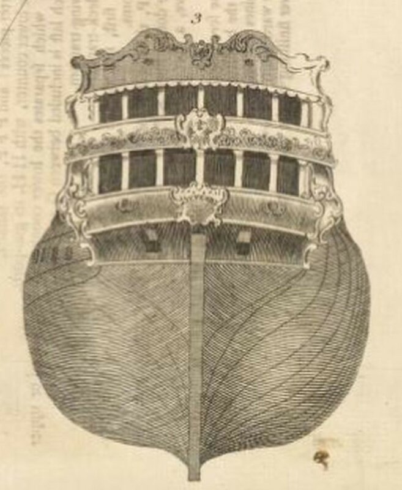
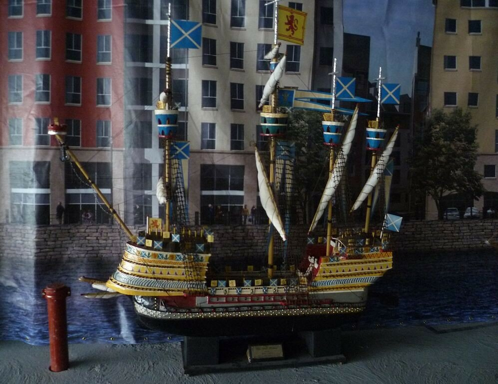

Классический тип каракки сложился к первой половине XV века. От своих предшественников каракка отличалась закругленными формами кормовой оконечности, в нижней ее части, и развитыми боевыми марсами на мачтах. Поясья бортовой обшивки не обрывались резко на стыке с плоскостью транца,

Корабль с транцевым типом кормы. Гравюра Hans Burgkmair
а постепенно закругляясь, шли вплоть до ахтерштевня.

Каракка, вид с кормы. Гравюра Бернарда фон Брейденбаха (Bernhard von Breydenbach, Peregrinatio in Terram Sanctam), 1486.

Фламандская каракка, с гравюры Мастера WA,1468
Каракка явилась первым парусным кораблем, на котором тяжелые орудия были размещены близко к ватерлинии, для чего на этом корабле появились герметично закрывающиеся пушечные порты.
Историю появления пушечного порта на каракках мы подробно осветили в одном из более ранних постов. Сделаем к тому рассказу несколько дополнений и уточнений. Размещение тяжелой артиллерии на каракках явилось реакцией на успешное использование тяжелых куршейных пушек на галерах, заклятых врагах парусных кораблей. Размещение орудий на верхней палубе, где уже находились легкие бомбарды, было чревато фатальным нарушением остойчивости высокобортного парусника. Поэтому попробовали опустить орудия палубой ниже, а для ведения огня из них прорезали отверстия в борту. Однако первые пушечные порты появились не на привычных для нас местах – вдоль бортов, а в кормовой оконечности корпуса каракки, в плоской ее части,над баллером руля, которая называется кормовым подзором.

Корма парусного судна. Кормовой подзор изображен по обе стороны верхней части руля.
Для современного читателя размещение самого крупного калибра бортовой артиллерии в кормовой части корабля может показаться странным, но плоский подзор давал возможность без проблем обеспечивать водонепроницаемость орудийных портов. А учитывая, что основным противником каракки на море были галеры, которые могли действовать только при относительно спокойном море, то экипаж каракки при появлении галеры противника даже в безветренную погоду или при стоянке на якоре мог быстро спустить шлюпки с верповочной командой на борту и развернуть каракку кормой к противнику.
Помещение в кормовой части нижней палубы, где стали размещать тяжелые орудия, получило название gun-room. Это вполне естественно. Неестественным может показаться тот факт, что спустя долгое время, когда главный калибр парусных кораблей уже давно ставили вдоль бортов, помещение, в котором уже не было пушек, продолжали называть по традиции gun-room. На русском флоте его называли констапельской. Констапель – до 1830 года – первый, низший офицерский чин в морской артиллерии. Для хранения артиллерийских припасов и размещения самого констапеля, а затем и всех младших офицеров корабля, как раз и было выделено пустующее помещение в кормовой части гон-дека (самой нижней батарейной палубы). Так констапельская превратилась в кают-компанию младших офицеров корабля. Когда чин констапеля на флоте был отменен, констапельскую стали иногода называть гардемаринской, хотя чаще все же чтили традицию и сохраняли старое название.
Таким образом, каракки стали первыми в истории кораблями с размещением тяжелой артиллерии на нижних батарейных палубах. Первым боевым испытанием тяжелой корабельной артиллерии принято считать огонь по береговым целям на острове Cairn-na-Burgh (Внутренние Гебриды) из пушек, установленных на каракках флота короля Шотландии Якова IV. Произошло это в 1503 г. Корабельные мастера быстро уловили новую тенденцию, освоили технику вырезания пушечных портов в округлых бортах каракк и уже к 1520 году стало обычным размещение тяжелых орудий вдоль бортов парусного корабля.

Каракка Great Michael короля Шотландии Якова IV, спущена на воду в 1511 . Модель. Каракка имела три тяжелых орудия (василиска), одно из которых размещалось в носу, а два – в корме корабля.
Быстрее всех отреагировали на появление нового типа корабля португальцы. Они оперативно заменили каравеллы, основной тип корабля на индийском направлении (Carreira das Indias), на более мощные и вместительные каракки, которые господствовали на этом маршруте вплоть до семнадцатого века, когда они уступили место галеонам.
Продолжим в следующий раз.